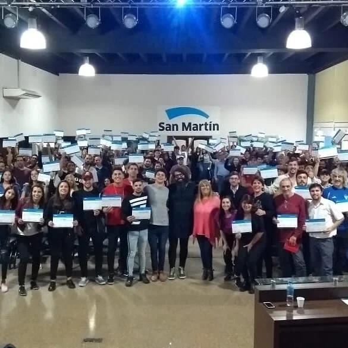

About
From London, UK.
At home everywhere.
Nahuel Berneri is an accomplished producer and studio record, mix & mastering engineer. He has worked globally — recording in venues across Argentina, Mexico, Bolivia, España, Chile, and Uruguay — and producing and mastering for major label releases for artists like Chango Spasiuk and Chancha Via Circuito.
Nahuel has been working as a sound engineer in some capacity since the age of 16. He studied in Buenos Aires and then honed his craft in venues and recording studios across Latin America and Europe.
Throughout this time he built up his studio recording and mixing skills at Camaron Brujo Música Studios, recording almost every major artist in Argentina.
On top of his work as a music producer, since 2005 he's been an audio and music production lecturer at places like World ORT and the Escuela de Música de Buenos Aires (EMBA), teaching courses with rooms of more than four hundred attendees.
